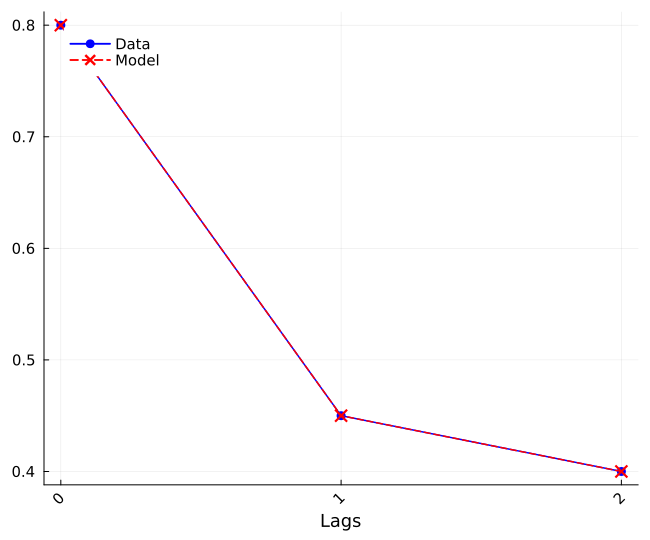
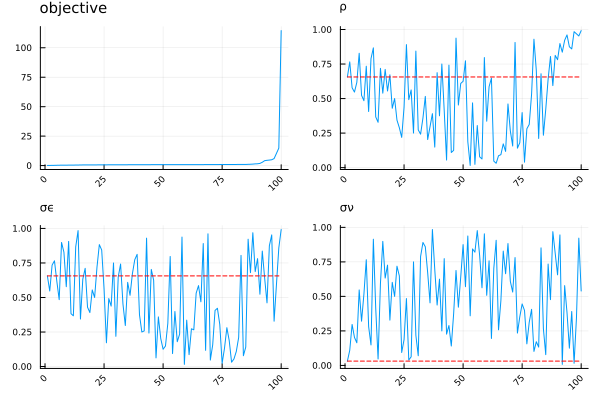
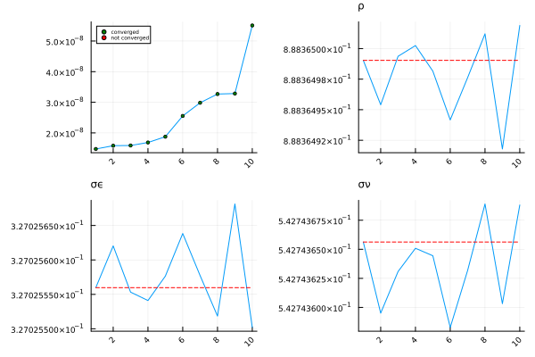
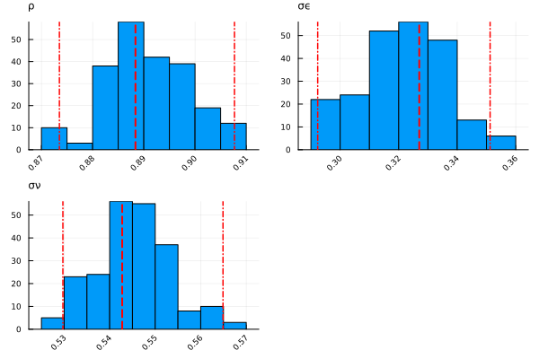

Example: Estimating an AR(1) process with noise
In this example we show the main features of the package. Consider a stochastic process that is a sum of an AR(1) process and a white noise as follows:
\[\begin{align*} y_{i,t} &= z_{i,t} + \nu_{i,t}\\ z_{i,t} &= \rho \cdot z_{i,t-1} + \varepsilon_{i,t}, \end{align*}\]
where
\[ \varepsilon_{i,t} \sim \mathcal{N}(0,\sigma_\varepsilon^2) \qquad \nu_{i,t} \sim \mathcal{N}(0,\sigma_\nu^2)\]
are i.i.d. shocks. The aim is to estimate parameters $(\rho, \sigma_\varepsilon, \sigma_\nu)$ based on a set of moments $\text{Var}(y_{t}), \text{Cov}(y_{t}, y_{t-1}), \text{Cov}(y_{t}, y_{t-2})$ computed from an observed sample of $y_{i,t}$s.
Setting up the problem
First, one needs to define an estimation mode:
struct AR1Estimation <: EstimationMode
"mode-dependent prefix of filenames used for saving estimation results"
filename::String
endDuring the estimation, one needs to evaluate the objective function for each parameter guess. Passing invariant parameters to the objective function is possible via defining an auxiliary structure which has to be a subtype of AuxiliaryParameters. One also needs to write a corresponding function to generate a default auxiliary structure as shown below. In this case, we pass the dimensions of the simulated sample.
struct AR1AuxPar{T<:Integer} <: AuxiliaryParameters
"sample size of simulation"
Nsim::T
"number of time periods to simulate"
Tsim::T
"number of periods to discard for moment evaluation "
Tdis::T
end
AuxiliaryParameters(mode::AR1Estimation, modelname::String) = AR1AuxPar(10000, 200, 100)It is crucial that the same set of shocks are used during the parameter estimation, as otherwise convergence cannot be achieved in the local minimization phase (the sensitivity of results to different draws of shocks can be checked via bootstrapping, as explained later in the Inference section). This is again done by defining an appropriate subtype of an existing abstract type and a function generating a default container of shocks. In this case, one needs to draw a normal shock for $\varepsilon$ and $\nu$ for each t and n.
struct AR1PreShocks{S<:AbstractFloat} <: PredrawnShocks
"preallocated array for persistent shocks"
ϵs::Array{S,2}
"preallocated array for transitory shocks"
νs::Array{S,2}
end
function PredrawnShocks(mode::AR1Estimation, modelname::String, typemom::String,aux::AuxiliaryParameters)
return AR1PreShocks(randn(aux.Nsim, aux.Tsim),
randn(aux.Nsim, aux.Tsim))
endIn order to compute the necessary moments of large samples, one often needs to populate large arrays with realized values(in our case, of $y_{i,t}$s). Creating separate containers for each guess for the parameter vector would be very costly, so instead this is done once before starting the estimation, and the data contained within will be repeatedly overwritten (note that when performing an estimation via parallel computing, these containers are internally generated separately for each thread, and hence data race is avoided). In this example, we will compute cross-sectional moments in each time period and take their time-average in the final step. Therefore, we need to keep track of $z$ and $y$ (together its first and second lags) and the already computed moments. Defining the structure of preallocated data follows a similar logic as the previous steps.
struct AR1PrealCont{S<:AbstractFloat} <: PreallocatedContainers
z::Vector{S}
y::Vector{S}
ylag1::Vector{S}
ylag2::Vector{S}
mat::Array{S,2}
end
function PreallocatedContainers(mode::AR1Estimation, modelname::String, typemom::String,
aux::AuxiliaryParameters)
z = Vector{Float64}(undef, aux.Nsim)
y = Vector{Float64}(undef, aux.Nsim)
ylag1 = Vector{Float64}(undef, aux.Nsim)
ylag2 = Vector{Float64}(undef, aux.Nsim)
mat = Array{Float64}(undef, 3, aux.Tsim) # one row for each moment
return AR1PrealCont(z, y, ylag1, ylag2, mat)
endPreallocatedContainersNow we are in the position of constructing the objective function. This is done via writing a method for MomentMatching.obj_mom!, specializing it on the subtype AR1Estimation created before.
using Statistics
function MomentMatching.obj_mom!(mom::AbstractVector, momnorm::AbstractVector,
mode::AR1Estimation, x::Array{Float64,1}, modelname::String, typemom::String,
aux::AuxiliaryParameters, presh::PredrawnShocks, preal::PreallocatedContainers;
saving_model::Bool=false, filename::String="")
(ρ, σϵ, σν) = x
for n in 1:aux.Nsim
preal.z[n] = 0.0
end
for t in 1:aux.Tsim
for n in 1:aux.Nsim
preal.z[n] = ρ * preal.z[n] + σϵ * presh.ϵs[n, t]
preal.y[n] = preal.z[n] + σν * presh.νs[n, t]
end
if t > 2
preal.mat[3, t] = cov(preal.y, preal.ylag2)
copy!(preal.ylag2, preal.ylag1)
end
if t > 1
preal.mat[2, t] = cov(preal.y, preal.ylag1)
copy!(preal.ylag1, preal.y)
end
preal.mat[1, t] = var(preal.y)
copy!(preal.ylag1, preal.y)
end
mom[1] = mean(@view preal.mat[1, aux.Tdis:end])
momnorm[1] = mom[1]
mom[2] = mean(@view preal.mat[2, aux.Tdis:end])
momnorm[2] = mom[2]
mom[3] = mean(@view preal.mat[3, aux.Tdis:end])
momnorm[3] = mom[3]
endWe give the names and ranges of the targeted parameters by writing a method of parambounds. During the global phase of the estimation, the region within 'global' bounds is searched. Violating 'hard' bounds during the local phase induces a penalty to redirect the algorithm towards the allowed range.
function MomentMatching.parambounds(mode::AR1Estimation)
full_labels = [ "ρ", "σϵ", "σν"]
full_lb_hard = [ 0.0, 0.0, 0.0 ]
full_lb_global = [ 0.0, 0.0, 0.0 ]
full_ub_global = [ 1.0, 1.0, 1.0 ]
full_ub_hard = [ 1.0, Inf, Inf ]
return full_labels, full_lb_hard, full_lb_global, full_ub_global, full_ub_hard
endNext, we specify which moments are targeted during the estimation. In an actual application, this function would most likely read in values from a dataset, but here we just give three arbitrary numbers for each moments.
function MomentMatching.datamoments(mode::AR1Estimation, typemom::String)
momtrue = [0.8, 0.45, 0.4] # made up numbers
mmomtrue = deepcopy(momtrue)
return hcat(momtrue, mmomtrue)
endFinally, we name the targeted moments. The momentnames function has to return a DataFrame with two columns, where one targeted moment corresponds to one row. If the two moments have coinciding values in the first column, the corresponding results will be visualized together, as shown in section Estimation.
using DataFrames
function MomentMatching.momentnames(mode::AR1Estimation, typemom::String)
moments = fill("Cov(y_t,y_t-j)", 3)
lags = string.(0:2)
return DataFrame(Moment=moments, Lags=lags)
endBy default the deviation between data and model moments is obtained by rescaling the difference between the two with data means of each moment. For instance, if one targets the time-series of the cross-sectional skewness of the distribution of income growth, the differences in each year would be scaled by the time-series average of the cross-sectional skewness (clearly, if one targets just one moment the mean is the moment itself). The user can change this by writing a mode-specific mdiff function (see related code in estimation.jl).
Estimation
After defining an estimation setup (see section Estimating alternative specifications for more details on why this structure is useful) and a structure supplying numerical settings, one can perform the estimation as follows. After checking 100 points in the global phase, a local minimization takes place using the Nelder-Mead algorithm, stated from the 10 global points with the lowest objective function values.
In this example we use the default weighting matrix - which is the unitary matrix - but the user can change this by defining a a mode-specific default_weight_matrix function (see related code in estimation.jl) or by passing their preferred weighting matrix via the keyword argument Wmat to estimation.
using OptimizationOptimJL
setup = EstimationSetup(AR1Estimation("ar1estim"), "", "")
npest = NumParMM(setup; Nglo=100, Nloc=10,
local_opt_settings = (algorithm = NelderMead(), maxtime = 30.0))
est = estimation(setup; npmm=npest, saving=false);
Performing global stage... 2%|▌ | ETA: 0:02:52
Performing global stage... 100%|█████████████████████████| Time: 0:00:04
Performing local stage... 20%|█████▎ | ETA: 0:00:38
Performing local stage... 50%|█████████████ | ETA: 0:00:17
Performing local stage... 80%|████████████████████▊ | ETA: 0:00:06
Performing local stage... 100%|██████████████████████████| Time: 0:00:25The estimated parameters can be displayed as follows:
tableest(setup, est)| Row | Variable | Point estimate |
|---|---|---|
| String | Float64 | |
| 1 | ρ | 0.888 |
| 2 | σϵ | 0.327 |
| 3 | σν | 0.543 |
The match with targeted moments can either be displayed as a table
tablemoms(setup, est)| Row | Moment | Lags | Sample values | Model values |
|---|---|---|---|---|
| String | String | Float64 | Float64 | |
| 1 | Cov(y_t,y_t-j) | 0 | 0.8 | 0.8 |
| 2 | Cov(y_t,y_t-j) | 1 | 0.45 | 0.45 |
| 3 | Cov(y_t,y_t-j) | 2 | 0.4 | 0.4 |
or visualized on a figure:
using Plots
fmoms(setup, est)GKS: cannot open display - headless operation mode active
As in this case 3 parameters were estimated based on 3 moments (and hence parameters are exactly identified), the resulting match is very close.
Results can be saved by setting saving equal to true. In this case filename specified in estimation mode will be used as suffix. The default saving path is "./saved/estimation_results/".
Wrapping any model
When running structural estimation exercises, one usually has a code that performs the same computations as MomentMatching.obj_mom! and loops over it to evaluate the objective functions at different points. Given that, it is simple to wrap any model into the format required by MomentMatching by following the steps below before running the estimation function:
- Set up an
EstimationModestructure. - Write
EstimationMode-specific auxiliary structuresAuxiliaryParameters,PredrawnShocksandPreallocatedContainerswhenever relevant. - Set the bounds of the parameter space and the values of the moments to be matched by writing an
EstimationMode-specificMomentMatching.paramboundsandMomentMatching.datamomentsfunctions. - Define an
EstimationSetupand a structure supplying numerical settingsNumParMM.
Relation with GMM
In the above example we have explained how the procedure works with SMM, but extending usage of our package routines to GMM is straightforward. With GMM usually one has a set of moment conditions that should hold with equality and rather than simulating data from a model, actual data are used to compute such conditions over the points in the parameter space.
The user, therefore, in this case just needs to write their own code to compute such conditions and check how far away from zero they are. In other words, zero is the data moment to be used when computing the difference between model and data moments.
Note that since the default version of mdiff scales by the average of a specific data moment (if one targets just a moment the mean is clearly the moment itself), if such value is zero, the user also needs to write a mode-specific mdiff function.
Diagnostics
When the objective function is highly non-linear, it is in general difficult to know if the obtained parameter estimate indeed corresponds to a global minimizer. One concern would be that the obtained local optimum is 'too local', i.e. its basin of attraction is too narrow. In this case the local optimum would be very sensitive to the respective initial point. To judge the accuracy of the estimated parameter vector, two heuristic methods are available in this package.
First, it is possible to visualize how the objective function depends on varying the parameter estimates one-at-a-time (keeping the other parameters constant), around the best point.
marg = marginal_fobj(setup, est, 17, fill(0.1, 3))
fmarg(setup, est, marg)
Second, one can visualize how sensitive the corresponding parameter values are to the rank of the corresponding global or local point, with respect to their objective function values. This is informative on the sufficient number of global and local points.
Output from the global stage is available via the global keyword.
fsanity(setup, est, glob = true)
By default, results from the local stage are shown.
fsanity(setup, est)
Inference
Parametric Bootstrap
Even if the model is correctly specified, there are two reasons why parameters are estimated with an error:
- The targeted population moments are obtained from a finite sample.
- If evaluating the objecting function involves uncertainty, the whole estimation procedure is conducted with one particular draw of shocks. This makes results potentially sensitive to this specific realization of shocks.
One can gauge the joint effect of these forces on the precision of the estimates via parametric bootstrapping.
- First, using the obtained parameter estimates, $N_{sample}$ independent samples are created to mimic the uncertainty in the data generating process. The targeted moments are then computed from each of these samples. Note that the size of the simulated samples have to coincide with the actual data sample which was used to compute the data moments.
- Second, if computing the objective function involves random draws, $N_{seed}$ number of different shocks are draws.
Then for each pair of alternative moments and seeds, the local stage of the estimation is repeated starting from the best local point of the original estimation. The distribution of the resulting $N_{sample} \cdot N_{seed}$ new estimates can then be used to generate confidence intervals.
Tdis = 20 # burn in
Tdata = 40 # true data length
Ndata = 500 # true sample size
Nsample = 15 # number of samples used for bootstrap
Nseed = 15 # number of shock simulations used for bootstrap
auxmomsim = AR1AuxPar(Ndata, Tdata + Tdis, Tdis)
boot = param_bootstrap_result(setup, est, auxmomsim, Nseed, Nsample, Ndata, saving=false)
fbootstrap(setup, est, boot)
Performing bootstrap... 1%|▎ | ETA: 0:12:52
Performing bootstrap... 2%|▋ | ETA: 0:09:33
Performing bootstrap... 3%|▉ | ETA: 0:08:55
Performing bootstrap... 4%|█▎ | ETA: 0:08:21
Performing bootstrap... 6%|█▋ | ETA: 0:08:00
Performing bootstrap... 7%|██ | ETA: 0:07:43
Performing bootstrap... 8%|██▎ | ETA: 0:07:35
Performing bootstrap... 9%|██▋ | ETA: 0:07:20
Performing bootstrap... 10%|██▉ | ETA: 0:07:15
Performing bootstrap... 12%|███▎ | ETA: 0:07:04
Performing bootstrap... 13%|███▋ | ETA: 0:06:56
Performing bootstrap... 14%|████ | ETA: 0:06:47
Performing bootstrap... 16%|████▍ | ETA: 0:06:39
Performing bootstrap... 16%|████▋ | ETA: 0:06:34
Performing bootstrap... 18%|█████ | ETA: 0:06:26
Performing bootstrap... 19%|█████▎ | ETA: 0:06:21
Performing bootstrap... 20%|█████▋ | ETA: 0:06:13
Performing bootstrap... 21%|█████▉ | ETA: 0:06:09
Performing bootstrap... 22%|██████▎ | ETA: 0:06:01
Performing bootstrap... 24%|██████▋ | ETA: 0:05:54
Performing bootstrap... 25%|███████ | ETA: 0:05:47
Performing bootstrap... 26%|███████▍ | ETA: 0:05:40
Performing bootstrap... 28%|███████▊ | ETA: 0:05:33
Performing bootstrap... 29%|████████▏ | ETA: 0:05:26
Performing bootstrap... 30%|████████▌ | ETA: 0:05:19
Performing bootstrap... 31%|████████▊ | ETA: 0:05:15
Performing bootstrap... 32%|█████████▏ | ETA: 0:05:08
Performing bootstrap... 34%|█████████▌ | ETA: 0:05:02
Performing bootstrap... 35%|█████████▉ | ETA: 0:04:56
Performing bootstrap... 36%|██████████▎ | ETA: 0:04:49
Performing bootstrap... 38%|██████████▋ | ETA: 0:04:43
Performing bootstrap... 39%|███████████ | ETA: 0:04:36
Performing bootstrap... 40%|███████████▎ | ETA: 0:04:32
Performing bootstrap... 41%|███████████▋ | ETA: 0:04:26
Performing bootstrap... 42%|███████████▉ | ETA: 0:04:22
Performing bootstrap... 44%|████████████▎ | ETA: 0:04:16
Performing bootstrap... 44%|████████████▌ | ETA: 0:04:12
Performing bootstrap... 46%|████████████▉ | ETA: 0:04:06
Performing bootstrap... 47%|█████████████▏ | ETA: 0:04:02
Performing bootstrap... 48%|█████████████▌ | ETA: 0:03:56
Performing bootstrap... 49%|█████████████▉ | ETA: 0:03:50
Performing bootstrap... 51%|██████████████▏ | ETA: 0:03:44
Performing bootstrap... 52%|██████████████▍ | ETA: 0:03:40
Performing bootstrap... 53%|██████████████▊ | ETA: 0:03:33
Performing bootstrap... 54%|███████████████ | ETA: 0:03:29
Performing bootstrap... 55%|███████████████▍ | ETA: 0:03:23
Performing bootstrap... 56%|███████████████▋ | ETA: 0:03:19
Performing bootstrap... 57%|████████████████ | ETA: 0:03:13
Performing bootstrap... 59%|████████████████▍ | ETA: 0:03:07
Performing bootstrap... 60%|████████████████▊ | ETA: 0:03:00
Performing bootstrap... 61%|█████████████████ | ETA: 0:02:56
Performing bootstrap... 62%|█████████████████▍ | ETA: 0:02:50
Performing bootstrap... 64%|█████████████████▊ | ETA: 0:02:44
Performing bootstrap... 68%|███████████████████ | ETA: 0:02:24
Performing bootstrap... 69%|███████████████████▍ | ETA: 0:02:18
Performing bootstrap... 70%|███████████████████▋ | ETA: 0:02:14
Performing bootstrap... 72%|████████████████████ | ETA: 0:02:08
Performing bootstrap... 73%|████████████████████▍ | ETA: 0:02:02
Performing bootstrap... 74%|████████████████████▊ | ETA: 0:01:56
Performing bootstrap... 75%|█████████████████████ | ETA: 0:01:52
Performing bootstrap... 76%|█████████████████████▍ | ETA: 0:01:45
Performing bootstrap... 77%|█████████████████████▋ | ETA: 0:01:42
Performing bootstrap... 79%|██████████████████████ | ETA: 0:01:36
Performing bootstrap... 80%|██████████████████████▍ | ETA: 0:01:30
Performing bootstrap... 81%|██████████████████████▊ | ETA: 0:01:24
Performing bootstrap... 83%|███████████████████████▏ | ETA: 0:01:18
Performing bootstrap... 84%|███████████████████████▌ | ETA: 0:01:12
Performing bootstrap... 85%|███████████████████████▉ | ETA: 0:01:06
Performing bootstrap... 86%|████████████████████████▏ | ETA: 0:01:02
Performing bootstrap... 88%|████████████████████████▌ | ETA: 0:00:56
Performing bootstrap... 89%|████████████████████████▉ | ETA: 0:00:50
Performing bootstrap... 90%|█████████████████████████▎ | ETA: 0:00:44
Performing bootstrap... 92%|█████████████████████████▊ | ETA: 0:00:36
Performing bootstrap... 93%|██████████████████████████▏ | ETA: 0:00:30
Performing bootstrap... 94%|██████████████████████████▍ | ETA: 0:00:26
Performing bootstrap... 96%|██████████████████████████▉ | ETA: 0:00:18
Performing bootstrap... 97%|███████████████████████████▎| ETA: 0:00:12
Performing bootstrap... 99%|███████████████████████████▋| ETA: 0:00:06
Performing bootstrap... 100%|████████████████████████████| Time: 0:07:22
Multithreading and multiprocessing
The global and local phases of the estimation procedure require evaluating the objective function at many points of the parameter space. In our package this task can be parallelized with multithreading (Threads module, distributes across cores within a process), multiprocessing (Distributed module, distributes across different processes) and/or a combination of the two (distributes across different processes and then across the cores within a process) by appropriately setting the structure ComputationSettings. We describe below how to do this locally and on a cluster.
While we have designed the package to make it hard to create data races, it is always the user's responsibility to check that this does not happen in their own model. For instance, it is not suggested to solve a model with multithreading if the latter is already active when looping over points in the parameter space. Use the macro maythread in the part of your code using multithreading to be able to set the latter on and off with the function threading_inside (both included in the package).
Local parallelization
The code below performs the global stage locally (location="local") in three ways:
- Two processes (
num_procs=2), each started with two threads (i.e., coresnum_threads=2) and no multithreading (num_tasks=1). - One process (default) with all avaliable threads (default with one process) and multithreading (
num_tasksdefaults toThreads.nthreads()*2). - Two processes, each started with two threads and multithreading.
- Multiprocessing distributes the total number of points to be evaluated equally across the number of processes.
- The default option for
num_taskstries to minimize idleness and implies that multithreading is active by default. - The number of threads is controlled by using the option
-t/--threadscommand line argument or by using theJULIA_NUM_THREADSenvironment variable (see here).
The difference between the first and the third case is that in the latter evaluation of points is distributed across the two threads while in the former two cores are used but evaluation of points is not parallelized across them.
Given that memory is not shared across the different processes, before running any code using multiprocessing we need to make sure that the required elements (functions, packages, structures, types...) are loaded in each of them. The function to do that is load_on_procs. Specifically, one writes a Julia script dedicated to loading all the required elements and calls it in load_on_procs which takes care of running it in every process. In our case such file is called init.jl and it basically loads the functions, packages, structures, types, etc. that we have used so far in this example (if you want to have a look, the script is available in the docs folder of the GitHub repository of the package). Be sure to specify the path correctly when calling include.
julia> using Distributed
julia> using ClusterManagers
julia> function MomentMatching.load_on_procs(mode::AR1Estimation)
return @everywhere begin include("init.jl") end
endNow we are ready to perform the estimation in all the three ways just described. Let's first set up each ComputationSettings structure:
julia> cs_1 = ComputationSettings(location="local", num_procs=2, num_threads=2, num_tasks=1);
julia> cs_2 = ComputationSettings(location="local");
julia> cs_3 = ComputationSettings(location="local", num_procs=2, num_threads=2);Then draw common shocks to test equivalence of methods later:
julia> auxest = AuxiliaryParameters(AR1Estimation("ar1estim"), "");
julia> preshest = PredrawnShocks(AR1Estimation("ar1estim"), "", "", auxest);And finally run the estimations with the three different specifications:
julia> est_1 = estimation(setup; npmm=npest, presh=preshest, cs=cs_1, saving=false);
Performing global stage... 100%|██████████████████████████████████████████████████████████████████████████████████████████████████| Time: 0:00:23
Performing local stage... 100%|███████████████████████████████████████████████████████████████████████████████████████████████████| Time: 0:01:52
julia> est_2 = estimation(setup; npmm=npest, presh=preshest, cs=cs_2, saving=false);
Performing global stage... 100%|██████████████████████████████████████████████████████████████████████████████████████████████████| Time: 0:00:05
Performing local stage... 100%|███████████████████████████████████████████████████████████████████████████████████████████████████| Time: 0:01:22
julia> est_3 = estimation(setup; npmm=npest, presh=preshest, cs=cs_3, saving=false);
Performing global stage... 100%|██████████████████████████████████████████████████████████████████████████████████████████████████| Time: 0:00:25
Performing local stage... 100%|███████████████████████████████████████████████████████████████████████████████████████████████████| Time: 0:01:41Sanity check that results are the same (they might differ slightly from the estimation at the beginning since we have drawn new shocks and because of the low maximum time - for exemplificatory purposes - specified for the solver in the local stage):
julia> tableest(setup,est_1);
3×2 DataFrame
Row │ Variable Point estimate
│ String Float64
─────┼──────────────────────────
1 │ ρ 0.89
2 │ σϵ 0.326
3 │ σν 0.542
julia> tableest(setup,est_2);
3×2 DataFrame
Row │ Variable Point estimate
│ String Float64
─────┼──────────────────────────
1 │ ρ 0.89
2 │ σϵ 0.326
3 │ σν 0.542
julia> tableest(setup,est_3);
3×2 DataFrame
Row │ Variable Point estimate
│ String Float64
─────┼──────────────────────────
1 │ ρ 0.89
2 │ σϵ 0.326
3 │ σν 0.542Since in the code above both the global and local phases are performed, the specified computational settings are applied to both. It is of course possible to run each phase separately with its own computational settings (see the section Only global or only local the description of how to run the two stages separately). ComputationSettings also works in the function performing bootstrapping.
Parallelization on a cluster
Currently, our package works only on clusters using Slurm Workload Manager. This is an example on how to set ComputationSettings for running the estimation on Slurm:
cs = ComputationSettings(location = "slurm",
num_procs = 16,
num_tasks = 8,
num_threads = 8,
maxmem = 70,
clustermanager_settings = Dict(:A => "x",
:job_name => "y",
:nodes => "4",
:ntasks_per_node => "4",
:cpus_per_task => "8",
:exclusive => "",
:mem => "90GB",
:time => "23:59:59",
:partition => "z"))We have specified the following options:
location = "slurm"the computation should be run on Slurm managernum_procs = 16the total number of processes to be started (16 in this case). On Slurm this has to be equal to:nodes * :ntasks_per_nodenum_tasks = 8the number of tasks per thread to be performednum_threads = 8number of threads to be started in each Julia process. On Slurm this has to be equal to:cpus_per_task(see below)maxmem = 70specifies the level in GB where aggressive garbage collection is triggered, should be less than:mem(see below)clustermanager_settingsis a flexibleDictionarywhich passes the relevant options to Slurm. In this case we have specified::Athe project account to be charged for the computational allocation requested:job_namethe name of the job:nodeshow many HPC nodes are to be used (4 in this case):ntasks_per_nodehow many processes per node have to be started (4 in this case), must be less than the number of cores per node:cpus_per_taskhow many cores are to be used per process (8 in this case), must be less than number of cores on node:exclusivethat the job allocation cannot share nodes with other running jobs:memthe total memory requested per node:timethe total time requested:partitionthe name of the HPC partition to use
Users can thus perform multiprocessing, multithreading and/or a combination of the two also on a cluster which uses Slurm by properly specifying these options. Including ComputationSettings defined in the way just explained in the estimation command will automatically ensure that the latter is run with Slurm.
As explained in the example, the options to be passed to Slurm are related to the options to be specified in the structure ComputationSettings of our package. We are aware of the slight abuse of notation of the word task: in our package it refers to the number of tasks for multithreading, while in Slurm to the number of processes per node. This is a legacy from having added the Slurm option after the local one, and it might be changed in future versions.
- Hardware configuration and rules for Slurm options to be included might differ across HPCs. It's the user's responsibility to make sure that the options conform with their specific case.
- If on a cluster, it's important to remember to set up correctly the required environment by loading the packages and functions in each process before running the estimation.
- If one runs the code from an open Julia session in the HPC then the Slurm command called is
srun. It should be possible to use alsosbatchby writing a script that calls the code.
The best combination of options to choose in ComputationSettings (both when running jobs locally and on HPC) depends on the specific model and computer configuration used. For instance, while setting up multiple processes enhances parallelization, initializing them also requires time. We encourage users to experiment different combinations to figure out which one is the best for their setting.
Other useful features
Estimating alternative specifications
The package allows easy estimation of alternative model specifications or using a different set of moments. For instance, imagine that we want to estimate the original model without the noise, i.e., $\sigma_\nu=0$, by targeting only the variance and the first-order autocovariance. The first step is to define appropriately the structure EstimationSetup:
setup_noise_off = EstimationSetup(AR1Estimation("ar1estim"), "noise_off", "onlytwo");The first element is EstimationMode (as we had before, and we keep it the same since we are considering a restricted version of the original model), the second element is a string specifying how we want to call this restricted specification (modelname), and the latter is a string specifying how to call the set of moments to target (typemom). Note that these two strings were defined as empty in the case presented before.
Then, one specifies which parameters have to be estimated (relative to the order specified in parambounds) with the function indexvector:
function MomentMatching.indexvector(mode::AR1Estimation, modelname::String)
indexvec = fill(true, length(parambounds(mode)[1]))
if modelname == "noise_off" # we do not estimate the noise variance (which is the third element in parambounds)
indexvec[3] = false
end
return indexvec
endIf indexvector is not specified by the user, the algorithm includes all the parameters in parambounds.
Similarly, the set of moments to be targeted can be specified by redefining MomentMatching.datamoments for different typemom:
function MomentMatching.datamoments(mode::AR1Estimation, typemom::String)
momtrue = [0.8, 0.45, 0.4] # made up numbers
mmomtrue = deepcopy(momtrue)
if typemom == ""
return hcat(momtrue, mmomtrue)
elseif typemom == "onlytwo" # in this case only first two moments used
return hcat(momtrue[1:2], mmomtrue[1:2])
end
endIn this case we target only the first two moments. Finally, we redefine also the objective function:
function MomentMatching.obj_mom!(mom::AbstractVector, momnorm::AbstractVector,
mode::AR1Estimation, x::Array{Float64,1}, modelname::String, typemom::String,
aux::AuxiliaryParameters, presh::PredrawnShocks, preal::PreallocatedContainers;
saving_model::Bool=false, filename::String="")
if typemom == ""
(ρ, σϵ, σν) = x
elseif typemom == "onlytwo" # we set the last parameter to zero
(ρ, σϵ, σν) = vcat(x, 0.0)
end
for n in 1:aux.Nsim
preal.z[n] = 0.0
end
for t in 1:aux.Tsim
for n in 1:aux.Nsim
preal.z[n] = ρ * preal.z[n] + σϵ * presh.ϵs[n, t]
preal.y[n] = preal.z[n] + σν * presh.νs[n, t]
end
if t > 2
preal.mat[3, t] = cov(preal.y, preal.ylag2)
copy!(preal.ylag2, preal.ylag1)
end
if t > 1
preal.mat[2, t] = cov(preal.y, preal.ylag1)
copy!(preal.ylag1, preal.y)
end
preal.mat[1, t] = var(preal.y)
copy!(preal.ylag1, preal.y)
end
mom[1] = mean(@view preal.mat[1, aux.Tdis:end])
momnorm[1] = mom[1]
mom[2] = mean(@view preal.mat[2, aux.Tdis:end])
momnorm[2] = mom[2]
if typemom == "" # this moment is needed only in the benchmark case
mom[3] = mean(@view preal.mat[3, aux.Tdis:end])
momnorm[3] = mom[3]
end
endWe also redefine the function to present the results:
function MomentMatching.momentnames(mode::AR1Estimation, typemom::String)
moments = fill("Cov(y_t,y_t-j)", 3)
lags = string.(0:2)
if typemom == ""
return DataFrame(Moment=moments, Lags=lags)
elseif typemom == "onlytwo"
return DataFrame(Moment=moments[1:2], Lags=lags[1:2])
end
endIn a similar fashion, it is possible to make modelname- and typemom-specific also the auxiliary functions and the default matrix.
We are now ready to run the estimation of the restricted model:
est_noise_off = estimation(setup_noise_off; npmm=npest, saving=false);
tableest(setup_noise_off, est_noise_off)| Row | Variable | Point estimate |
|---|---|---|
| String | Float64 | |
| 1 | ρ | 0.561 |
| 2 | σϵ | 0.74 |
tablemoms(setup_noise_off, est_noise_off)| Row | Moment | Lags | Sample values | Model values |
|---|---|---|---|---|
| String | String | Float64 | Float64 | |
| 1 | Cov(y_t,y_t-j) | 0 | 0.8 | 0.8 |
| 2 | Cov(y_t,y_t-j) | 1 | 0.45 | 0.45 |
In this example we have shown how to adapt the procedure to make it modelname- and typemom-specific. One can of course make it specific for just for one of the two. For instance, if there are more moments than parameters one could just change typemom to estimate the original model with different sets of moments.
Only global or only local
In the main example above both the global and local stages were performed in the same call. It is possible to perform only the global or only the local stage with the options onlyglo and onlyloc available in NumParMM:
npest_glo = NumParMM(setup; Nglo=100, onlyglo=true)
npest_loc = NumParMM(setup; onlyloc=true,local_opt_settings = (algorithm = NelderMead(), maxtime = 30.0))
est_glo = estimation(setup; npmm=npest_glo, saving=false)
# use the best 10 global as starting points
est_loc = estimation(setup; npmm=npest_loc, xlocstart = est_glo.xglo[1:10], saving=false)
Performing global stage... 3%|▊ | ETA: 0:00:03
Performing global stage... 6%|█▌ | ETA: 0:00:06
Performing global stage... 15%|███▊ | ETA: 0:00:03
Performing global stage... 28%|███████ | ETA: 0:00:02
Performing global stage... 41%|██████████▎ | ETA: 0:00:01
Performing global stage... 54%|█████████████▌ | ETA: 0:00:01
Performing global stage... 67%|████████████████▊ | ETA: 0:00:00
Performing global stage... 80%|████████████████████ | ETA: 0:00:00
Performing global stage... 94%|███████████████████████▌ | ETA: 0:00:00
Performing global stage... 100%|█████████████████████████| Time: 0:00:01
Performing local stage... 20%|█████▎ | ETA: 0:00:29
Performing local stage... 50%|█████████████ | ETA: 0:00:14
Performing local stage... 80%|████████████████████▊ | ETA: 0:00:05
Performing local stage... 100%|██████████████████████████| Time: 0:00:23Note that in this example results might differ slightly from the estimation above because new shocks have been drawn (and because of the low maximum time - for exemplificatory purposes - specified for the solver in the local stage). It is possible to draw the shocks once and then pass them across different calls of estimation with the presh option. See the section Multithreading and multiprocessing for an example.
Merging results
For very long estimation exercises it can be useful to split the evaluation of global and/or local points across different calls of estimation and save the results after each call (so that if something goes wrong one does not need to recompute everything from scratch). For instance, to evaluate 10000 global points one can call estimation four times, each time evaluating 2500 points and then saving the results (choosing which global points to evaluate in a given parameter space can be achieved through the option sobolinds in estimation). The function to achieve this is mergeglo. Below an example with 100 global points evaluated with two calls:
npest_glo_batch1 = NumParMM(setup; sobolinds=1:50, onlyglo=true)
npest_glo_batch2 = NumParMM(setup; sobolinds=51:100, onlyglo=true)
est_batch1 = estimation(setup; npmm=npest_glo_batch1, saving=false)
est_batch2 = estimation(setup; npmm=npest_glo_batch2, saving=false)
estmerged = mergeglo(setup, [est_batch1, est_batch2]; saving=false)
Performing global stage... 8%|██ | ETA: 0:00:01
Performing global stage... 16%|████ | ETA: 0:00:02
Performing global stage... 36%|█████████ | ETA: 0:00:01
Performing global stage... 62%|███████████████▌ | ETA: 0:00:00
Performing global stage... 90%|██████████████████████▌ | ETA: 0:00:00
Performing global stage... 100%|█████████████████████████| Time: 0:00:00
Performing global stage... 20%|█████ | ETA: 0:00:00
Performing global stage... 48%|████████████ | ETA: 0:00:00
Performing global stage... 74%|██████████████████▌ | ETA: 0:00:00
Performing global stage... 100%|█████████████████████████| Time: 0:00:00In this case, the estimation results to be merged were already in memory when merging, but one can of course load any already saved estimation result (again, note that results might be different from previous estimations for the same reasons described before).
A similar procedure can be applied for the local stage with the function mergeloc (in this case the user needs to specify the starting points to be evaluated with the option xlocstart in estimation). Finally, the function mergegloloc allows to merge together separate global and local results.
To create the merged estimation result structure, mergeglo uses AuxiliaryParameters, PredrawnShocks and ParMM (the latter is an auxiliary structure to initialize all the estimation inputs, see relevant code in estimation.jl) structures from first entry of the vector of results. The same holds for mergeloc with the addition that also the global results used as input come from the first entry of the vector of results. Finally mergegloloc assumes that global and local results to be merged are already ordered (mergeglo and mergeloc instead obviously perform reordering).